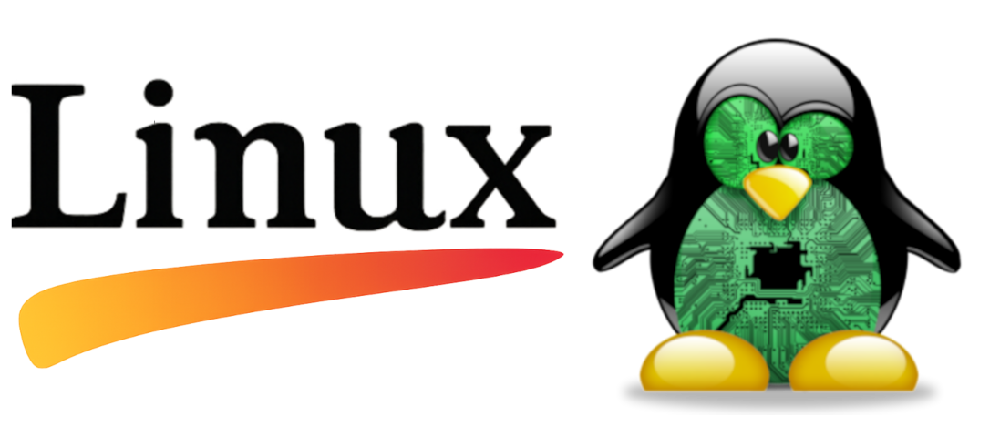
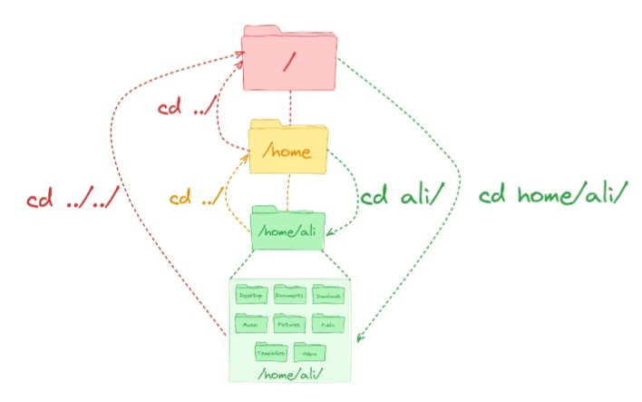
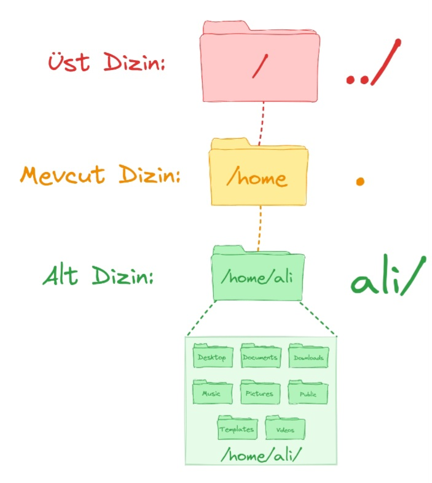
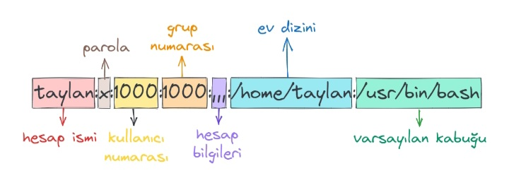
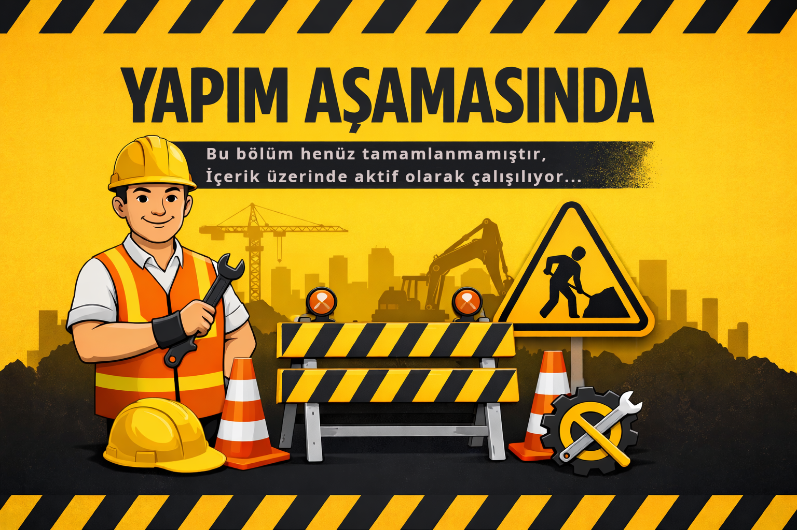

Linux İşletim Sistemi
Son güncelleme : 01/2026
İçindekiler
➤ Komut Satırı [pwd cd ls touch file cat less history cp mv mkdir rm chattr find help man whatis alias]
➤ Metin İşlemleri [stdout stdin stderr pipe tee env cut paste head tail expand unexpand wc nl]
➤ Gelişmiş Metin İşlemleri [join split sort tr uniq grep regex vim emacs]
➤ Kullanıcı Yönetimi [Kullanıcılar ve Gruplar root sudo Kullanıcı Hesabı Oluşturmak /etc/passwd /etc/shadow /etc/group]
➤
📅 Tarihçe
Linux'un nasıl ortaya çıktığını öğrenmek için, 1969'a, Ken Thompson ve Dennis Ritchie'nin Bell Laboratuvarlarında UNIX işletim sistemini geliştirdikleri zamana dönelim. Daha sonra taşınabilirliği artırmak için C dilinde yeniden yazıldı ve sonunda yaygın olarak kullanılan bir işletim sistemi haline geldi.
Yaklaşık on yıl sonra, Richard Stallman, GNU (GNU, UNIX Değildir) projesi üzerinde çalışmaya başladı. Bu proje kapsamında Hurd adında bir GNU çekirdeği geliştirildi, ancak maalesef asla tamamlanmadı. Bunun sonucu olarak, özgür yazılım lisansı olan GNU Genel Kamu Lisansı (GPL) de oluşturuldu.
Çekirdek, işletim sisteminin en önemli parçasıdır. Donanımın yazılımla iletişim kurmasını sağlar. Biz kullanıcılar sistemde bulunan yazılımlar ile çekirdeğe emirler veririz, çekirdekde donanıma o işi yaptırır. Çekirdeğin sisteminizde olup biten her şeyi kontrol eder.
Bu dönemde BSD, MINIX vb. gibi diğer UNIX benzeri sistemler geliştirildi. Ancak, tüm bu UNIX benzeri sistemlerin ortak noktası, tek bir çekirdek eksikliğiydi.
Ardından 1991'de Linus Torvalds adında genç bir adam, bugün bildiğimiz Linux çekirdeğini geliştirmeye başladı.
Sonuç olarak GNU yazılımları ve linux çekirdeğinin birleşimi ile ortaya açık kaynak, özgür bi işletim sistemi çıkmıştır.
🔥 Linux Dağıtımları

Bir Linux sistemi üç ana bölümden oluşur:
Donanım: Bu, sisteminizin çalıştığı tüm donanımları, bellek, CPU, diskler vb. içerir.
Linux Çekirdeği: Yukarıda belirttiğimiz gibi, çekirdek işletim sisteminin merkezidir. Donanımı yönetir ve sistemle nasıl etkileşim kuracağını söyler.
Kullanıcı Alanı: Bu, bizler gibi kullanıcıların çeşitli yazımlar ile doğrudan sistemle etkileşim kuracağı yerdir.
Seçilebilecek birçok Linux dağıtımı vardır, sadece en popüler seçeneklere göz atacağız.
►Debian Dağıtımı
Genel Bakış
Debian, tamamen özgür ve açık kaynaklı yazılımlardan oluşan bir işletim sistemidir. Geniş çapta bilinen ve 20 yılı aşkın süredir geliştirilmektedir. Kullanabileceğiniz üç ana sürümü vardır: Stable ( kararlı), Testing (test ) ve Unstable (kararsız).
Sürümler
Stable: Genel olarak kullanılması iyi olan bir sürüm. Sisteminizde kararlılık ve güvenlik öncelikliyse bu sürümü tercih edebilirsiniz. Testing ve Unstable: Sürekli güncelleme (rolling release) alan dallardır. Bu, bu dallardaki aşamalı değişikliklerin sonunda Stable sürümüne dahil olacağı anlamına gelir. Örneğin, Windows XP'den Windows 10'a yükseltme yapmak istiyorsanız, tam bir Windows 10 kurulumu yapmanız gerekir. Ancak Testing sürümünü kullanıyorsanız, tam bir kurulum yapmadan bir sonraki işletim sistemi sürümü olana kadar otomatik olarak güncellemeleri alacaksınız.
Paket Yönetimi
Debian, kendi paket yönetim (APT) araçlarını kullanır. Her Linux dağıtımı paketleri farklı şekilde kurar, yönetir ve farklı paket yönetim araçları kullanır.
Yapılandırılabilirlik
Debian en son güncellemeleri almasa da son derece kararlıdır. İyi bir "temel" işletim sistemi arıyorsanız, bu sizin için doğru tercih olabilir.
Kullanım Alanları
Debian, her platform için genel olarak harika bir işletim sistemidir.
► Red Hat Enterprise Linux Dağıtımı
Genel Bakış
Red Hat Enterprise Linux, genellikle RHEL olarak adlandırılır ve Red Hat tarafından geliştirilir. RHEL, ücretsiz yeniden dağıtımı kısıtlamak için katı kurallara sahiptir, ancak yine de kaynak kodunu ücretsiz olarak sağlar.
Paket Yönetimi
RHEL, Debian'dan farklı bir paket yöneticisi olan RPM paket yöneticisini kullanır.
Yapılandırılabilirlik
RHEL tabanlı işletim sistemleri, Debian tabanlı işletim sistemlerinden biraz farklılık gösterecek, özellikle paket yönetiminde daha belirgin olacaktır.
Kullanım Alanları
Adından da anlaşılacağı gibi, çoğunlukla kurumsal alanda kullanılır, bu nedenle sağlam bir sunucu işletim sistemine ihtiyacınız varsa bu iyi bir tercih olacaktır.
► Ubuntu Dağıtımı
Genel Bakış
Kişisel bilgisayarlar için en popüler Linux dağıtımlarından biri Ubuntu'dur. Ubuntu ayrıca varsayılan olarak kendi masaüstü ortamı yöneticisi Unity'yi yayınlar.
Paket Yönetimi
Ubuntu, Canonical tarafından geliştirilen Debian tabanlı bir işletim sistemidir. Dolayısıyla temel olarak Debian paket yönetim sistemini kullanır.
Yapılandırılabilirlik
Linux'a başlamak isteyen yeni başlayanlar için Ubuntu harika bir seçimdir. Ubuntu, kullanıcı dostu arayüzü ve geniş çapta benimsenilmesine yol açan kullanım kolaylığı sunar. Yaygın olarak kullanılmakta ve desteklenmektedir ve kullanılabilirlik açısından diğer işletim sistemleri gibi OSX ve Windows'a en çok benzerlik gösterir.
Kullanım Alanları
Masaüstü, dizüstü bilgisayar ve sunucu dahil olmak üzere her platform için uygundur.
► Fedora Dağıtımı
Genel Bakış
Red Hat tarafından desteklenen Fedora Projesi, açık kaynaklı ve ücretsiz yazılımları içeren, topluluk odaklı bir projedir. Red Hat Enterprise Linux, Fedora'dan dallanarak geliştirilir, bu nedenle Fedora'yı bir upstream RHEL işletim sistemi olarak düşünebilirsiniz. Sonuç olarak, Red Hat Enterprise Linux, kapsamlı test ve kalite güvencesinden sonra Fedora'dan güncellemeler alacaktır. Fedora'yı, Debian yerine Red Hat altyapısı kullanan bir Ubuntu eşdeğeri olarak düşünebilirsiniz.
Paket Yönetimi
Fedora, Red Hat paket yöneticisini kullanır.
Yapılandırılabilirlik
Red Hat tabanlı bir işletim sistemi kullanmak istiyorsanız, bu kullanıcı dostu bir versiyondur.
Kullanım Alanları
Fedora, Red Hat tabanlı bir işletim sistemini fiyat etiketi olmadan kullanmak istiyorsanız harika bir seçimdir. Masaüstü ve dizüstü bilgisayarlar için önerilir.
► Linux Mint Dağıtımı
Genel Bakış
Linux Mint, Ubuntu tabanlı bir işletim sistemidir. Ubuntu'nun yazılım depolarını kullanır, böylece her iki dağıtımda da aynı paketler kullanılabilir. Ubuntu'dan daha hafif bir dağıtım tercih ediyorsanız, Linux Mint ilginizi çekebilir.
Paket Yönetimi
Linux Mint, Ubuntu tabanlı olduğundan Debian paket yöneticisini kullanır.
Yapılandırılabilirlik
Harika bir kullanıcı arayüzü sunar, yeni başlayanlar için uygundur ve Ubuntu'dan daha az gereksiz yazılım içerir.
Kullanım Alanları
Masaüstü ve dizüstü bilgisayarlar için uygundur.
► Arch Linux Dağıtımı
Genel Bakış
Arch Linux, %100 topluluk tarafından yönetilen, hafif ve esnek bir Linux dağıtımdır. Debian'a benzer şekilde, Arch da sürekli güncelleme modelini (rolling release) kullanır, bu nedenle kademeli güncellemeler sonunda Stable (kararlı) sürüm haline gelir. Sistemi ve işlevlerini anlamak için gerçekten uygulamalı olarak öğrenmeniz gerekir, ancak karşılığında sisteminiz üzerinde tam ve eksiksiz kontrol elde edersiniz.
Paket Yönetimi
Paketleri kurmak, güncellemek ve yönetmek için kendi paket yöneticisi Pacman'ı kullanır.
Yapılandırılabilirlik
Hafif bir işletim sistemi istiyor ve Linux'u gerçekten anlamak istiyorsanız Arch'ı kullanın! Biraz öğrenme eğrisi olsa da, hardcore Linux kullanıcıları için harika bir seçimdir.
Kullanım Alanları
Masaüstü ve dizüstü bilgisayarlar için uygundur. Ayrıca Raspberry Pi gibi küçük bir cihazınız varsa ve üzerine hafif bir işletim sistemi kurmanız gerekiyorsa, Arch'ı tercih edebilirsiniz.
► openSUSE Dağıtımı
Genel Bakış
openSUSE Linux, tüm dünyadaki Özgür ve Açık Kaynaklı Yazılım topluluğunun bir parçası olarak açık, şeffaf ve dostça bir şekilde birlikte çalışan openSUSE Projesi tarafından yaratılmıştır. openSUSE, halen çalışmakta olan ikinci en eski Linux dağıtımıdır ve ödüllü SUSE Linux Enterprise ürünleriyle taban sistemini paylaşır.
Paket Yönetimi
RPM paket yöneticisini kullanır.
Kullanılabilirlik
openSUSE, yeni bir Linux kullanıcısı için harika bir seçimdir. Kullanımı kolay bir grafiksel kurulum/yönetim uygulaması (YaST) ve düzenli bir temel sistem sunar, kurcalamaya kolay açıktır. openSUSE, ister fotoğraflarınız, videolarınız, müzikleriniz ister kodunuz olsun, İnternet'in keyfini virüslerden/casus yazılımlardan endişe duymadan çıkarmanız ve yaratıcılığınızı ortaya koymanız için ihtiyacınız olan her şeyi içerir.
Kullanım Alanları
openSUSE Leap, masaüstü PC ve dizüstü bilgisayarda kullanıma tamamen uygundur.
💻 Komut Satırı
🔼 Başa Dön
Kabuk (Shell)
Kabuk, temelde klavyenizden komutlarınızı alıp bunları işletim sistemine göndererek gerçekleştirilmesini sağlayan bir programdır. Daha önce bir GUI (grafiksel arayüz) kullandıysanız, "Terminal" veya "Konsol" gibi progralları görmüşsünüzdür. Bunlar sizin için bir kabuk başlatan programlardır.
Bu belgede kabuk programı bash (Bourne Again SHell) kullanacağız, hemen hemen tüm Linux dağıtımları varsayılan olarak bash kabuğunu kullanır. Ksh, zsh, tsch gibi başka kabuklar da mevcuttur, ancak en çok kullanılan kabuk programı bash'dir. chsh -s [kabuk-adı] komutu ile kabuğu değiştirebiliriz. (örneğin chsh -s /usr/bin/bash)
Temelde bizler kabuğa iki tür komut girebiliyoruz. Bu türler “dahili” ve “harici” olarak gruplanmış olan komutlardır.
Dahili Komutlar(Built-ins)
Dahili komutlar, kabuk programında yerleşik olan araçları çalıştırmak üzere kullanılan komutlardır. Bash üzerinde yer alan tüm dahili komutları görmek için compgen -b komutunu kullanabiliriz.
Harici Komutlar(External)
Harici komutlar ise, mevcut sistem üzerinde yüklü bulunan araçları çalıştırmamızı sağlayan komutlardır. Tabii ki bu tür komutlar harici olan araçları temsil eden komutlar olduğu için kullanmakta olduğunuz sisteme göre harici komutlar değişiklik gösterir. Örneğin siz komut satırı üzerinden metinleri düzenleyebilmenizi sağlayacak olan nano aracını çalıştırmak üzere kabuğa aracın ismini girdiğinizde eğer araç sistemde yüklü ise açılır. Eğer yüklü değilse komut yok hatası alırsınız. İşte burada girdiğiniz nano komutu harici bir komut olarak kabul ediliyor. Çünkü nano aracı bash kabuğunun içinde yüklü gelen bir araç değil, nano aracı harici olarak sisteme yüklenmiş olan bir metin editörü yazılımıdır.
Genel görünümü (promt) aşağıdaki gibidir.
xxxxxxxxxxkullanıcı_adı@bilgisayar_adı:su_anki_dizinali@pc:/home/ali $Promptun sonunda $ sembolünü gördünüz mü? Farklı kabukların farklı promptları olacaktır, bizim durumumuzda $ sembolü Bash, Bourne veya Korn kabuğunu kullanan normal bir kullanıcı içindir, komutu yazarken bu sembolü eklemeyin.
Basit bir komut olan echo ile başlayalım. echo komutu, metin argümanlarını ekrana yazdırır.
xxxxxxxxxx$ echo Merhaba Dünyapwd (Print Working Directory / Çalışma Dizini Yazdır)
Linux'ta her şey bir dosyadır, Linux'u derinlemesine öğrendikçe bunu anlayacaksınız, ancak şimdilik sadece bunu aklınızda bulundurun. Her dosya, hiyerarşik bir dizin ağacında organize edilir. Dosya sistemindeki ilk dizin, kök dizin olarak adlandırılır. Kök dizinde, daha fazla klasör ve dosya depolayabileceğiniz birçok klasör ve dosya bulunur. Bu dosya ve dizinlerin konumları yollar olarak adlandırılır.
Dosya sisteminde gezinmek, tıpkı gerçek hayatta olduğu gibi, nerede olduğunuzu ve nereye gideceğinizi bilmeniz yararlıdır. Nerede olduğunuzu görmek için pwd komutunu kullanabilirsiniz, bu komut "çalışma dizinini yazdır" anlamına gelir ve yalnızca hangi dizinde olduğunuzu gösterir, yolun kök dizinden geldiğini unutmayın.
xxxxxxxxxx$ pwdcd (Change Directory / Dizin Değiştir)
Şimdi nerede olduğunuzu öğrendiğinize göre, dosya sisteminde biraz dolaşabileceğimize bakalım. Dosya sisteminde gezinmek için yolları kullanmamız gerektiğini unutmayın. Yol belirtmenin mutlak ve göreli olmak üzere iki farklı yolu vardır.
Mutlak yol: Bu, kök dizinden itibaren olan yoldur. Kök dizin en önemli dizindir. Kök dizin genellikle bir eğik çizgi "/" olarak gösterilir. Yolunuz her zaman "/" ile başladığında, kök dizinden başladığınız anlamına gelir. Örneğin, /home/ali/Masaüstü
Göreli yol: Bu, dosya sistemindeki bulunduğunuz konumdan itibaren olan yoldur. Eğer /home/ali/Dökümanlar konumunda olsaydım ve Dökümanlar içinde vergiler adında bir dizine gitmek isteseydim, /home/ali/Dökümanlar/vergiler gibi kök dizinden tüm yolu belirtmeme gerek yok, bunun yerine sadece vergiler/ dizinine gidebilirim.

Artık yolların nasıl çalıştığını bildiğinize göre, istediğimiz dizine geçmemize yardımcı olacak bir şeye ihtiyacımız var. Neyse ki, bunu yapmak için cd "dizin değiştir" komutu kullanılır.
xxxxxxxxxx$ cd /home/ali/PicturesBöylece şimdi dizin konumumu /home/ali/Pictures olarak değiştirdim.
Şimdi bu dizinden Hawaii adında bir klasörüm var, şu şekilde o klasöre gidebilirim:
xxxxxxxxxxali@pc:/home/ali/Pictures $ cd HawaiiSadece klasörün adını nasıl kullandığımı fark ettiniz mi? Çünkü zaten /home/ali/Pictures konumundaydım.
Her zaman mutlak ve göreli yollarla gezinmek oldukça yorucu olabilir, Neyse ki, size yardımcı olacak bazı kısayollar var.
► . (geçerli dizin): Şu anda bulunduğunuz dizindir.
► .. (üst dizin): Sizi şu anki konumunuzun bir üst dizinine götürür.
► ~ (ana dizin): Bu dizin varsayılan olarak "ana dizininize" (~/home/kullanıcı_adı) gider.
► - (önceki dizin): Bu sizi az önce bulunduğunuz önceki dizine götürür.
Örnekler:
xxxxxxxxxx$ cd . # geçerli dizinde kal
$ cd .. # bir üst dizine git
$ cd ~ # ana dizine git
$ cd - # önceki dizine git
ls (List Directories)
Dizin içeriklerini listelemek ls komutunu kullanabiliriz. ls komutu varsayılan olarak geçerli dizindeki dizinleri ve dosyaları listeler, ancak hangi dizinin dizinlerini listelemek istediğinizi belirtebilirsiniz.
xxxxxxxxxx$ lsxxxxxxxxxx$ ls /home/aliAyrıca bir dizindeki tüm dosyaların görünmeyeceğini de unutmayın. Nokta ile başlayan dosya adları gizlidir, ancak bunları ls komutuyla görebilirsiniz ve -a (tümü için a) işaretini ekleyebilirsiniz.
xxxxxxxxxx$ ls -aBir başka ls işareti, -l uzun formatta ayrıntılı bir dosya listesi gösterir. Bu size ayrıntılı bilgi gösterecektir, soldan başlayarak: dosya izinleri, bağlantı sayısı, sahip adı, sahip grubu, dosya boyutu, son değişiklik zaman damgası ve dosya/dizin adı.
xxxxxxxxxxali@pc:~$ ls -l
total 80
drwxr-x--- 7 ali ali 4096 Nov 20 16:37 Desktop
drwxr-x--- 2 ali ali 4096 Oct 19 10:46 Documents
drwxr-x--- 4 ali ali 4096 Nov 20 09:30 Downloads
drwxr-x--- 2 ali ali 4096 Oct 7 13:13 Music
drwxr-x--- 2 ali ali 4096 Sep 21 14:02 Pictures
drwxr-x--- 2 ali ali 4096 Jul 27 12:41 Public
drwxr-x--- 2 ali ali 4096 Jul 27 12:41 Templates
drwxr-x--- 2 ali ali 4096 Jul 27 12:41 VideosSık kullanılan argümanlar
-l
Uzun listeleme formatı (izinler, sahip, grup, boyut, tarih).
xxxxxxxxxxls -l-h
Dosya boyutlarını insan okunabilir biçimde gösterir (KB, MB, GB).
Genellikle -l ile birlikte kullanılır.
xxxxxxxxxxls -lh-a
Gizli dosyaları da listeler (. ile başlayanlar).
xxxxxxxxxxls -a-A
Gizli dosyaları listeler ancak . ve .. hariç tutar.
xxxxxxxxxxls -ASıralama Seçenekleri
-t
Dosyaları son değiştirilme zamanına göre sıralar.
xxxxxxxxxxls -lt-S
Dosyaları boyutlarına göre sıralar.
xxxxxxxxxxls -lS-r
Ters sıralama yapar.
xxxxxxxxxxls -ltrDosya Türleri ve Ayırt Etme
-FDosya türünü sonuna ek işaretle belirtir:/→ dizin*→ çalıştırılabilir dosya@→ sembolik link
xxxxxxxxxxls -F--color=auto
Dosya türlerine göre renklendirerek gösterir (çoğu dağıtımda varsayılan).
xxxxxxxxxxls --color=autoDizin ve Alt Dizin İşlemleri
-d
Dizinin içeriğini değil, dizinin kendisini listeler.
xxxxxxxxxxls -ld /etc-R
Alt dizinlerle birlikte recursive (özyinelemeli) listeleme yapar.
xxxxxxxxxx ls -RZaman Bilgileri
-u
Son erişim zamanına göre listeler.
xxxxxxxxxxls -lu-c
Son durum değişikliği zamanına göre listeler.
xxxxxxxxxx ls -lcYaygın Kullanım Kombinasyonları
ls -lahTüm dosyalar, detaylı liste, okunabilir boyutlar.ls -ltrhEn eski dosyalar üstte olacak şekilde detaylı ve okunabilir liste.ls -ld */Sadece dizinleri uzun formatta listeler.
Kısa Özet Tablosu
| Argüman | Açıklama |
|---|---|
-l | Detaylı liste |
-a | Gizli dosyalar |
-h | Okunabilir boyut |
-t | Zamana göre sıralama |
-r | Ters sıralama |
-S | Boyuta göre sıralama |
-R | Alt dizinlerle |
-F | Dosya türü işareti |
-d | Dizinin kendisini gösterir |
touch
Touch, yeni boş dosyalar oluşturmanıza olanak tanır.
xxxxxxxxxx$ touch <dosya>Touch ayrıca mevcut dosya ve dizinlerde zaman damgalarını değiştirmek için kullanılır. Bir dosyadals -l komutunu kullanın ve zaman damgasını not edin, ardından o dosyaya touchkomutunu uygulayın, zaman damgası güncellenecektir.
file
Linux'ta, dosya adlarının dosyanın içeriğini temsil etmesi gerekmez. Aslında GIF olmayan komik.gif adında bir dosya oluşturabilirsiniz. Bu onun bi GIF dosyası olduğu anlamına gelmez.
Bir dosyanın ne tür bir dosya olduğunu bulmak için file komutunu kullanabilirsiniz. Bu komut, dosyanın içeriğinin bir açıklamasını size gösterecektir.
xxxxxxxxxx$ file komik.gifcat
Dosya okumak için kullanılır. Bu komut, concatenate (birleştirmek) kelimesinin kısaltmasıdır, yalnızca dosya içeriğini görüntülemez, aynı zamanda birden fazla dosyayı birleştirebilir ve size çıktıları gösterebilir.
xxxxxxxxxx$ cat dogfile birdfile > newfileAncak büyük dosyaları görüntülemek için pek uygun değildir ve yalnızca kısa içerikler için kullanılır.
less
Basit çıktılardan daha büyük metin dosyaları görüntüleyecekseniz, "az daha fazladır" (aslında benzer bir şey yapan more adında bir komut vardır). Metin, sayfa sayfa görüntülenir, böylece bir metin dosyasında sayfa sayfa gezinebilirsiniz.
Devam edin ve bir dosyanın içeriğine less komutu ile bakın. less komutundayken, dosyada gezinmek için diğer klavye komutlarını kullanabilirsiniz.
xxxxxxxxxx$ less /home/ali/Dökümanlar/metin1 less içinde gezinmek için aşağıdaki komutları kullanın:
q -
lessprogramından çıkıp komut satırına geri dönmek için kullanılır.Sayfa yukarı, Sayfa aşağı, Yukarı ve Aşağı okları - Ok tuşları ve sayfa tuşlarını kullanarak gezinin.
g - Metin dosyasının başına gitmek için kullanılır.
G - Metin dosyasının sonuna gitmek için kullanılır.
/arama - Metin belgesinin içinde belirli metinleri arayabilirsiniz. Aramak istediğiniz kelimelerin öncesine / işareti ekleyin.
h -
lessprogramını kullanırken nasıl kullanılacağı hakkında biraz yardıma ihtiyacınız varsa,hkomutunu kullanarak yardım ekranına erişebilirsiniz.
history
Kabukta, daha önce girdiğiniz komutların bir geçmişi vardır, aslında bu komutlara göz atabilirsiniz. Bu, daha önce kullandığınız bir komutu yeniden yazmadan bulup çalıştırmak istediğinizde oldukça faydalıdır.
Komut geçmişinizi görmek:
xxxxxxxxxx$ historyÖnceki komutu tekrar çalıştırmak: Yukarı ok tuşuna basın.
Son komutu tekrar çalıştırmak:
xxxxxxxxxx!!Örneğin, cat dosya1 yazdıysanız ve tekrar çalıştırmak istiyorsanız, sadece !! yazıp Enter'a basabilirsiniz. Bu, en son çalıştırdığınız komutu çalıştıracaktır.
Ters arama:
Ctrl-Rtuşlarına birlikte basın. Bu, ters arama komutudur.Ctrl-R'ye basıp aradığınız komutun bir kısmını yazmaya başlarsanız, size eşleşmeleri gösterecektir.Ctrl-Rtuşuna tekrar basarak bunlar arasında gezinebilirsiniz. Kullanmak istediğiniz komutu bulduktan sonra Enter tuşuna basmanız yeterlidir.Ekranı temizleme:
xxxxxxxxxx$ clearTab tuşu ile tamamlama: Komut satırı ortamında en kullanışlı özelliklerden biri tab tuşu ile tamamlamadır. Bir komutun, dosyanın, dizinin vb. başlangıcını yazmaya başlarsanız ve Tab tuşuna basarsanız, arama yaptığınız dizinde bulduğu şeye göre otomatik tamamlama yapacaktır. Örneğin,
chromekomutunu çalıştırmaya çalışıyorsanız,chryazıp Tab tuşuna basabilirsiniz, otomatik olarakchrometamamlanacaktır.
cp (Copy)
Dosyaları diğer işletim sistemlerinde kopyalayıp yapıştırmaya benzer şekilde, kabuk bize bunu yapmanın daha da basit bir yolunu sunar.
Tek bir dosya kopyalama:
xxxxxxxxxx$ cp <kopyalanacak_dosya> <hedef_konum>kopyalanacak_dosya kopyalamak istediğiniz dosyadır ve hedef_konum dosyayı kopyaladığınız yerdir.
Örnek:
xxxxxxxxxx$ cp metin.txt /home/ali/Dökümanlar/Bu komut, metin.txt adlı dosyayı /home/ali/Dökümanlar/ dizinine kopyalar.
Çoklu dosya ve dizin kopyalama:
Birden fazla dosya ve dizini kopyalayabilirsiniz ve ayrıca joker karakterleri de kullanabilirsiniz. Joker karakter, arama daha fazla esneklik kazandıran bir desen tabanlı seçimi temsil eden bir karakterdir. Daha fazla esneklik için her komutta joker karakterleri kullanabilirsiniz.
Joker karakterler:
*: Tüm tek karakterleri veya herhangi bir dizeyi temsil eder.?: Tek bir karakteri temsil eder.[]: Köşeli parantez içinde yer alan herhangi bir karakteri temsil eder.
Örnek:
xxxxxxxxxx$ cp *.jpg /home/ali/ResimlerBu komut, geçerli dizininizdeki tüm .jpg uzantılı dosyaları Resimler dizinine kopyalar.
Yinelenen dizin kopyalama:
Yararlı bir komut, -r (recursive, yinelenen) işaretini kullanmaktır. Bu, bir dizin içindeki dosyaları ve dizinleri yinelemeli olarak kopyalar.
Örnek:
xxxxxxxxxx$ cp -r Kabak /home/ali/DökümanlarNot: Aynı ada sahip bir dosyayı bir dizine kopyalarsanız, kopyaladığınız şey her neyse, var olan dosya üzerine yazılır. Bu, yanlışlıkla üzerine yazılmasını istemediğiniz bir dosyanız varsa iyi değildir. Dosyayı üzerine yazmadan önce size sormak için -i(interactive, etkileşimli) işaretini kullanabilirsiniz.
Örnek:
xxxxxxxxxx$ cp -i süperdosyam /home/pete/Resimlermv (Move)
mv komutu, dosyaları taşımak ve yeniden adlandırmak için kullanılır. cp komutuna benzer şekilde çalışır ancak dosyaları kopyalamak yerine taşır.
Dosya Yeniden Adlandırma
Dosyaları şu şekilde yeniden adlandırabilirsiniz:
xxxxxxxxxx$ mv <eski_dosya> <yeni_dosya>Dosya Taşıma
Bir dosyayı farklı bir dizine şu şekilde taşıyabilirsiniz:
xxxxxxxxxx$ mv dosya2 /home/pete/DökümanlarÇoklu Dosya Taşıma
Birden fazla dosyayı şu şekilde taşıyabilirsiniz:
xxxxxxxxxx$ mv dosya_1 dosya_2 /bir_dizinDizin Yeniden Adlandırma
Dizinleri de şu şekilde yeniden adlandırabilirsiniz:
xxxxxxxxxx$ mv <dizin1> <dizin2>Üzerine Yazma
Bir dosyayı veya dizini mv ile taşırsanız, aynı dizindeki herhangi bir şeyin üzerine yazar. Bu davranışı değiştirmek için -i işaretini kullanabilirsiniz.
xxxxxxxxxx$ mv -i dizin1 dizin2Yedek Oluşturma
Taşıma işlemini gerçekleştirmek ve üzerine yazmak istediğinizi varsayalım. Ayrıca o dosyanın bir yedeğini oluşturabilir ve eski sürümü yalnızca bir ~ ile yeniden adlandırabilirsiniz.
xxxxxxxxxx$ mv -b dizin1 dizin2mkdir (Make Directory)
Oluşturduğumuz tüm dosyaları depolamak için dizinlere ihtiyacımız olacak. mkdir (Make Directory) komutu bunun için kullanılır, var olmayan bir dizin oluşturur. Aynı anda birden fazla dizin bile oluşturabilirsiniz.
xxxxxxxxxx$ mkdir kitaplar resimlerAyrıca -p (parent, üst dizin) işareti ile aynı anda alt dizinler de oluşturabilirsiniz.
xxxxxxxxxx$ mkdir -p kitaplar/hemingway/favorilerrm (Remove)
Birçok dosya oluşturduk, şimdi bazılarını silelim. Dosyaları silmek için rm komutunu kullanabilirsiniz. rm (remove) komutu, dosya ve dizinleri silmek için kullanılır.
xxxxxxxxxx$ rm dosya1Dikkat: rm komutunu kullanırken dikkatli olun. Silinen dosyaları geri getirmek için sihirli bir çöp kutusu yoktur. Silindikten sonra sonsuza kadar kaybolurlar. Bu yüzden dikkatli olun.
Neyse ki, ortalama bir kullanıcının önemli dosyaları kolayca silmesini önlemek için bazı güvenlik önlemleri alınmıştır. Yazma korumalı dosyalar, silinmeden önce sizden onay ister. Bir dizin yazma korumalıysa, kolayca silinemez.
Linux'ta chattr (Change Attribute) komutu, dosyaların ve dizinlerin özniteliklerini (attributes) değiştirmek için kullanılır. Bu komut, standart chmod (izinler) komutundan farklıdır; çünkü dosya izinleri yazma yetkisi verse bile, chattr ile korunan bir dosya silinemez veya değiştirilemez.
Özellikle sistem güvenliğini sağlamak ve kritik dosyaların yanlışlıkla silinmesini önlemek için çok güçlü bir araçtır.
Temel Kullanım Sözdizimi
xxxxxxxxxxchattr [operatör] [öznitelik] [dosya_adı]+ : Belirtilen özniteliği ekler.
- : Belirtilen özniteliği kaldırır.
= : Dosyanın sadece belirtilen özniteliklere sahip olmasını sağlar.
En Çok Kullanılan Öznitelikler
Aşağıdaki tabloda en yaygın kullanılan chattr parametrelerini bulabilirsiniz:
| Öznitelik | Açıklama |
|---|---|
| i (immutable) | Dosya değiştirilemez, silinemez, ismi değiştirilemez ve bağ oluşturulamaz. Root kullanıcısı bile bu korumayı kaldırmadan dosyayı silemez. |
| a (append-only) | Dosya silinemez veya içeriği değiştirilemez; ancak sonuna yeni veri eklenebilir (Log dosyaları için idealdir). |
| c (compressed) | Dosyanın disk üzerinde kernel tarafından otomatik olarak sıkıştırılmasını sağlar. |
| u (undeletable) | Dosya silindiğinde verileri saklanır, böylece geri getirilmesi (undelete) kolaylaşır. |
Örnek Senaryolar
1. Dosyayı Tamamen Korumaya Almak (Silinemez/Değiştirilemez)
Bir dosyayı root dahil kimsenin silememesi veya düzenleyememesi için i özniteliğini kullanırız:
xxxxxxxxxxsudo chattr +i onemli_dosya.txtBu aşamadan sonra rm veya nano ile dosyaya müdahale edilemez.
2. Sadece Veri Eklenmesine İzin Vermek
Bir log dosyasının geçmişinin silinmesini istemiyor, sadece yeni satırlar eklenmesini istiyorsanız:
xxxxxxxxxxsudo chattr +a sistem.log3. Korumayı Kaldırmak
Özniteliği devre dışı bırakmak için - operatörü kullanılır:
xxxxxxxxxxsudo chattr -i onemli_dosya.txtÖznitelikleri Nasıl Kontrol Edilir? (lsattr)
Bir dosyanın hangi özniteliklere sahip olduğunu görmek için standart ls komutu işe yaramaz. Bunun yerine lsattr komutunu kullanmalısınız:p
xxxxxxxxxxlsattr onemli_dosya.txtÇıktı örneği:
----i---------e---- onemli_dosya.txt (Buradaki i, dosyanın kilitli olduğunu gösterir.)
Dikkat Edilmesi Gerekenler
chattrkomutunu kullanmak için genellikle root veya sudo yetkisi gerekir.Bu komut genellikle ext2, ext3, ext4, XFS gibi Linux dosya sistemlerinde çalışır.
iözniteliği atanmış bir dosyayı düzenlemeye çalışırsanız, "Permission Denied" (Erişim Engellendi) hatası alırsınız; bu hata dosya izinlerinden (chmod) değil, öznitelikten kaynaklıdır.
Dizinlerde kullanım için iki temel yöntem vardır:
1. Sadece Dizinin Kendisini Korumak
Eğer komutu doğrudan dizin ismiyle çalıştırırsanız, öznitelik sadece o klasörün kendisine uygulanır.
xxxxxxxxxxsudo chattr +i /home/kullanici/ozel_dizinBu ne sağlar?
Klasörün adı değiştirilemez.
Klasör silinemez.
Klasörün içine yeni dosya eklenemez ve içindeki mevcut dosyalar silinemez.
Ancak: Klasörün içindeki mevcut bir dosyanın içeriği (eğer dosyanın kendi
iözniteliği yoksa) hala değiştirilebilir.
2. Alt Dosya ve Dizinlerle Birlikte Korumak (Rekürsif)
Eğer klasörün içindeki her şeyin (tüm alt dosyalar ve klasörler) aynı korumaya sahip olmasını istiyorsanız -R (recursive) parametresini kullanmalısınız.
xxxxxxxxxxsudo chattr -R +i /home/kullanici/ozel_dizinBu ne sağlar?
Ana klasör kilitlenir.
İçindeki tüm mevcut dosyalar ve alt klasörler de tek tek
+iözniteliğini alır. Artık ne klasör ne de içindeki herhangi bir dosya silinebilir veya içeriği değiştirilebilir.
Önemli Bir Fark: i ve a Öznitelikleri
Dizinler söz konusu olduğunda şu farkı bilmek çok faydalıdır:
| Komut | Klasör İçindeki Etkisi |
|---|---|
chattr +i dizin/ | İçine yeni dosya eklenemez, mevcut dosyalar silinemez. |
chattr +a dizin/ | Mevcut dosyalar silinemez ama yeni dosyalar oluşturulabilir. |
Kontrol Etmek İçin
Dizine uygulanan özniteliği görmek için lsattr komutuna -d (directory) parametresini eklemeniz gerekir:
xxxxxxxxxxlsattr -d /home/kullanici/ozel_dizin-f veya force seçeneği,
rmkomutuna tüm dosyaları silmesini (yazma korumalı olsalar bile) kullanıcıya sormadan silmesini söyler (tabii ki gerekli izinlere sahipseniz).
xxxxxxxxxx$ rm -f dosya1Diğer birçok komutta olduğu gibi
-iişaretini eklemek, dosyaları veya dizinleri gerçekten silmek isteyip istemediğinizi soran bir uyarı görüntüler.
xxxxxxxxxx$ rm -i dosyaVarsayılan olarak
rmile bir dizini silemezsiniz. İçerdiği tüm dosyaları ve alt dizinleri silmek için-r(recursive, yinelemeli) işaretini eklemeniz gerekir.
xxxxxxxxxx$ rm -r dizinrmdirkomutuyla boş bir dizini silebilirsiniz.
xxxxxxxxxx$ rmdir dizinfind
Sistemde bu kadar çok dosya varken, belirli bir dosyayı bulmaya çalışmak biraz zor olabilir. Neyse ki, bunun için kullanabileceğimiz bir komut var: find
find komutunu kullanarak hangi dizinde arama yapacağınızı ve ne aradığınızı belirtmeniz gerekir. Bu örnekte, puppies.jpg adlı bir dosya aramaya çalışıyoruz.
Dosya adına göre arama:
xxxxxxxxxx$ find /home -name puppies.jpgDosya türüne göre arama:
Aradığınız dosyanın türünü de belirtebilirsiniz. Örneğin, bir klasör aramak için -type d seçeneğini kullanabilirsiniz.
xxxxxxxxxx$ find /home -type d -name MyFolderBu komutta, aradığımız dosya türünü (d) (dizin) olarak ayarladık ve yine MyFolder adına göre arama yapıyoruz.
Önemli Not: find komutu yalnızca aradığınız dizinde arama yapmaz, aynı zamanda o dizinin içinde olabilecek alt dizinlerin içine de bakar.
help
Linux, bir komutu nasıl kullanacağınızı öğrenmenize veya bir komut için hangi işaretlerin (flag) mevcut olduğunu denetlemenize yardımcı olacak yerleşik araçlara sahiptir.
help komutu:
help komutu, diğer bash komutları (echo, logout, pwd, vb.) hakkında yardım sağlayan yerleşik bir bash komutudur. Kullanmak istediğiniz komut hakkında bilgi almak için aşağıdaki gibi yazabilirsiniz:
xxxxxxxxxx$ help echoBu komut, echo komutunu çalıştırmak istediğinizde kullanabileceğiniz açıklamayı ve seçenekleri size gösterecektir.
--help seçeneği:
xxxxxxxxxx$ ls --helpLinux programları hakkında daha fazla bilgi edinmek istiyorsanız, man komutunu kullanarak man sayfalarına erişebilirsiniz. Man sayfaları, komutların ayrıntılı açıklamalarını, seçeneklerini ve kullanım örneklerini içerir. Kullanımı man <komut_adı> şeklindedir.
Örneğin, ls komutu hakkında daha fazla bilgi edinmek için:
man ls
whatis
Bir komutun ne işe yaradığından şüphe duyuyorsanız, whatis komutunu kullanarak kısa bir açıklama alabilirsiniz. whatis komutu, komut satırı programları hakkında özlü bilgiler sağlar.
Kullanım:
xxxxxxxxxx$ whatis <komut_adı>Örnek:
xxxxxxxxxx$ whatis catBu örnekte, cat komutunun ne işe yaradığı hakkında kısa bir açıklama görürsünüz. Açıklama, komutun man sayfasından alınır.
alias
Uzun komutları yazmaktan yoruldunuz mu? Belki de aynı komutu tekrar tekrar mı kullanıyorsunuz?
Linux size, sık kullandığınız komutlar için takma adlar oluşturma imkanı sunar. Bu takma adlar sayesinde komutları daha kısa ve yazması daha kolay hale getirebilirsiniz.
Takma Ad Oluşturma:
Bir takma ad oluşturmak için alias komutunu kullanın. Takma adın ismini istediğiniz gibi seçebilirsiniz, ardından eşittir işaretini (=) yazın ve takma adın hangi komutu çalıştırmasını istediğinizi belirtin.
Örneğin, ls -la komutunu sık sık kullanıyorsanız, bunun için la adında bir takma ad oluşturabilirsiniz:
xxxxxxxxxx$ alias la='ls -la'Bundan sonra, ls -la yazmak yerine la yazabilirsiniz. la yazdığınızda, aslında ls -la komutu çalıştırılacaktır.
Kalıcı Takma Adlar:
Bu komutla oluşturduğunuz takma adlar, terminal oturumunu kapattığınızda kaybolur. Eğer takma adın sürekli olarak kullanılabilir olmasını istiyorsanız, onu konfigürasyon dosyalarından birine eklemeniz gerekir.
Genellikle bash kullanıcıları için takma adlarl /home/ dizinindeki .bashrc dosyasına eklenir. Bu dosyayı bir metin editörü ile açıp, takma adınızı şu şekilde ekleyebilirsiniz:
xxxxxxxxxxalias la='ls -la'Daha sonra dosyayı kaydedin. Artık terminal oturumunu kapatıp açsanız bile la takma adını kullanmaya devam edebilirsiniz.
Takma Ad Silme:
Oluşturduğunuz bir takma ada artık ihtiyacınız yoksa, unalias komutunu kullanarak silebilirsiniz.
xxxxxxxxxx$ unalias laBu komuttan sonra la takma adını kullanamazsınız.
📃 Metin İşlemleri
🔼 Başa Dön
stdout (Standard Out)
Komutların nasıl çalıştığını ve çıktı ürettiklerini öğrendik. Şimdi bir sonraki konuya, yani girdi/çıktı akışları (I/O) konusuna geçelim. Aşağıdaki komutu çalıştırarak nasıl işlediğini görelim:
xxxxxxxxxx$ echo Hello World > peanuts.txtBu komutu çalıştırdığınız dizine gidin ve orada peanuts.txt adında bir dosya göreceksiniz. Dosyayı açtığınızda içinde "Hello World" yazısını göreceksiniz. Bu komutu incelediğimizde:
echo Komutu
xxxxxxxxxx$ echo Hello WorldBu komutun "Hello World" yazısını ekrana yazdırdığını biliyoruz. Peki nasıl oluyor? İşlemler, giriş almak ve çıktı döndürmek için girdi/çıktı akışları (I/O) kullanır. Varsayılan olarak, echo komutu klavyeden standart girdi (stdin) alır ve standart çıktı (stdout) olarak ekrana yazdırır. Bu nedenle, echo Hello World yazdığınızda ekranda "Hello World" görürsünüz.
Yönlendirme Operatörü
Ancak I/O yönlendirme, bize daha fazla esneklik sağlayarak bu varsayılan davranışı değiştirmemize izin verir.
> sembolü, standart çıktının nereye gideceğini değiştirmemizi sağlayan bir yönlendirme operatörüdür. echo Hello World komutunun çıktısını ekrana yazdırmak yerine bir dosyaya göndermemizi sağlar. Dosya zaten yoksa, bizim için oluşturur. Ancak, dosya zaten varsa, üzerine yazar (kullandığınız shell'e bağlı olarak bunu önlemek için bir shell işareti ekleyebilirsiniz).
Standart Çıktı Yönlendirme
Yani standart çıktı yönlendirme böyle çalışır!
Dosyaya Ekleme
Peki ya peanuts.txt dosyasının üzerine yazmak istemezsek >> operatörü kullanılır.
xxxxxxxxxx$ echo Hello World >> peanuts.txtBu komut, "Hello World" yazısını peanuts.txt dosyasının sonuna ekler. Dosya zaten yoksa, tıpkı > yönlendiricisi gibi bizim için oluşturur.
stdin (Standard In)
Standart giriş (stdin) akışlarını da farklı kaynaklardan kullanabiliriz. Klavyeden gelen veriler varsayılan standart giriş kaynağı olsa da, dosyaları, diğer işlemlerin çıktılarını ve terminali de stdin olarak kullanabiliriz.
Örnek: stdin Yönlendirme ile Dosya Kopyalama
Önceki derste oluşturduğumuz peanuts.txt dosyasını kullanalım. Bu dosyanın içinde "Hello World" yazısı olduğunu hatırlayın.
xxxxxxxxxx$ cat < peanuts.txt > banana.txtStandart çıktı yönlendirmede > sembolünü nasıl kullandık, aynı şekilde standart giriş yönlendirmede de < sembolünü kullanıyoruz.
Normalde cat komutunda, bir dosya ismi verirsiniz ve bu dosya standart giriş (stdin) haline gelir. Bu örnekte, peanuts.txt dosyasını standart giriş olarak kullanmak için yönlendirdik. Daha sonra, cat peanuts.txt komutunun çıktısı olan "Hello World" metni, banana.txt adında yeni bir dosyaya yönlendirildi.
Açıklama:
catkomutu, varsayılan olarak standart girişten (stdin) okuyup standart çıktıyı (stdout) ekrana yazar.< peanuts.txtkısmı,peanuts.txtdosyasının içeriğini standart giriş akışına yönlendirir. Yani,catkomutu sanki klavyeden "Hello World" yazmışız gibi davranır.> banana.txtkısmı ise standart çıktı akışınıbanana.txtdosyasına yönlendirir. Böylece,catkomutunun "Hello World" çıktısı bu dosyaya yazılır.
Sonuç:
Bu komutu çalıştırdığınızda, banana.txt adında yeni bir dosya oluşur ve içinde "Hello World" yazısı yer alır. Özetle, bu komut peanuts.txt dosyasının içeriğini banana.txt dosyasına kopyalamış olur.
stderr (Standard Error)
Şimdi biraz farklı bir şey deneyelim. Sisteminizde olmayan bir dizinin içeriğini listelemeye çalışalım ve çıktıyı yine peanuts.txt dosyasına yönlendirelim.
xxxxxxxxxx$ ls /fake/directory > peanuts.txtBu komutu çalıştırdığınızda ekranda aşağıdaki gibi bir mesaj görmelisiniz:
xxxxxxxxxxls: cannot access /fake/directory: No such file or directoryMuhtemelen şu anda, bu mesajın dosyaya yazdırılması gerektiğini düşünüyorsunuz. Aslında burada devreye giren başka bir I/O akışı var: standart hata (stderr). Standart çıktı (stdout) akışından tamamen farklı olan standart hata akışı, varsayılan olarak çıktısını da ekrana gönderir. Yani, standart hata çıktısını farklı bir şekilde yönlendirmeniz gerekir.
Ne yazık ki, standart hata yönlendirme sembolleri (< veya >) kadar kolay değildir, ancak dosya tanımlayıcıları kullanılarak yapılabilir. Bir dosya tanımlayıcısı, bir dosyaya veya akışa erişmek için kullanılan negatif olmayan bir sayıdır. Dosya tanımlayıcıları hakkında daha sonra daha ayrıntılı bilgi edineceğiz, ancak şimdilik standart giriş (stdin), standart çıktı (stdout) ve standart hata (stderr) için dosya tanımlayıcılarının sırasıyla 0, 1 ve 2 olduğunu bilmeniz yeterli.
Şimdi standart hata çıktısını dosyaya yönlendirmek istiyorsak şöyle yapabiliriz:
xxxxxxxxxx$ ls /fake/directory 2> peanuts.txtBu komutta, standart hata mesajlarını peanuts.txt dosyasına yazdırmış olduk.
Peki hem standart hata hem de standart çıktıyı peanuts.txt dosyasına yazdırmak istersek ne yapabiliriz? Bunu da dosya tanımlayıcıları ile yapabiliriz:
xxxxxxxxxx$ ls /fake/directory > peanuts.txt 2>&1Bu komut, ls /fake/directory komutunun sonuçlarını peanuts.txt dosyasına gönderir ve ardından 2>&1 ile standart hatayı standart çıktının yönlendirildiği yere yönlendirir. İşlem sırası burada önemlidir. 2>&1, standart hatayı standart çıktının işaret ettiği yere gönderir. Bu durumda standart çıktı bir dosyaya işaret ettiğinden, 2>&1 de standart hatayı bir dosyaya gönderir. Yani peanuts.txt dosyasını açarsanız, hem standart hata hem de standart çıktı mesajlarını görmelisiniz. Yukarıdaki komut yalnızca standart hata çıktısı ürettiği için her ikisini de görmeyebilirsiniz.
Hem standart hata hem de standart çıktıyı bir dosyaya yönlendirmenin daha kısa bir yolu vardır:
xxxxxxxxxx$ ls /fake/directory &> peanuts.txtPeki tüm bu gereksiz hata mesajlarından kurtulmak ve standart hata mesajlarını tamamen yok saymak istersek ne yapabiliriz? Çıktıyı /dev/null adlı özel bir dosyaya yönlendirebilirsiniz. Bu dosya, herhangi bir girişi yok sayar.
xxxxxxxxxx$ ls /fake/directory 2> /dev/nullpipe ve tee
xxxxxxxxxx$ ls -la /etcÇok uzun bir öğeler listesi göreceksiniz, aslında okuması biraz zor. Bu çıktıyı bir dosyaya yönlendirmek yerine, çıktıyı less gibi başka bir komutta görebilsek harika olmaz mı? Evet yapabiliriz!
xxxxxxxxxx$ ls -la /etc | lessDikey çubukla temsil edilen pipe operatörü |, bir komutun standart çıktı (stdout) verisini alıp başka bir işlemin standart girdi (stdin) verisi haline getirmemizi sağlar. Bu durumda, ls -la /etc komutunun standart çıktısını alıp less komutuna aktardık.
Peki ya komut çıktımı iki farklı akışa yazmak istersem? Bu, tee komutu ile mümkündür:
xxxxxxxxxx$ ls | tee fıstık.txtEkranda ls komutunun çıktısını görmelisiniz ve fıstık.txt dosyasını açarsanız aynı bilgileri görmelisiniz!
env (Environment)
Aşağıdaki komutu çalıştırın:
xxxxxxxxxx$ echo $HOMEAna dizininize giden yolu görmelisiniz, benimki /home/kullanıcı gibi görünüyor.
Peki ya şu komut:
xxxxxxxxxx$ echo $USERKullanıcı adınızı görmelisiniz!
Bu bilgiler nereden geliyor? Bunlar ortam değişkenlerinizden geliyor. Bunları yazarak görebilirsiniz:
xxxxxxxxxx$ envBu komut, şu anda ayarladığınız ortam değişkenleri hakkında bir sürü bilgi verir. Bu değişkenler, kabuğun ve diğer işlemlerin kullanabileceği faydalı bilgiler içerir.
İşte kısa bir örnek:
xxxxxxxxxxPATH=/usr/local/sbin:/usr/local/bin:/usr/sbin:/bin
PWD=/home/kullanıcı
USER=kullanıcıÖzellikle önemli bir değişken PATH değişkenidir. Bu değişkenlere, değişken adının önüne bir $ işareti koyarak erişebilirsiniz:
xxxxxxxxxx$ echo $PATH
/usr/local/sbin:/usr/local/bin:/usr/sbin:/binBu, sisteminiz bir komut çalıştırdığında aradığı yolların, iki nokta ile ayrılmış listesini döndürür. İnternetten manuel olarak bir paket indirip yüklediğinizi ve standart olmayan bir dizine koyduğunuzu ve bu komutu çalıştırmak istediğinizi varsayalım, komut yazıyorsunuz ve komut bulunamadı diyor. İkili dosyayı bir klasörde görüyorsunuz ve var olduğunu biliyorsunuz. Olan şey, $PATH değişkeninin bu ikili dosyayı aramak için o dizini kontrol etmemesi ve bu nedenle bir hata vermesidir.
Çalıştırmak istediğiniz birçok ikili dosyanın bulunduğu bir dizininiz olduğunu varsayalım, PATH ortam değişkeninizi bu dizini içerecek şekilde değiştirmeniz yeterlidir.
cut
Metin işlemek için kullanabileceğiniz birkaç faydalı komut öğreneceğiz. Başlamadan önce, üzerinde çalışacağımız bir dosya oluşturalım. Aşağıdaki komutu kopyalayıp yapıştırın, bunu yaptıktan sonra "lazy" ve "dog" arasına bir TAB ekleyin (Ctrl-v + TAB tuşlarına basılı tutun).
xxxxxxxxxx$ echo 'The quick brown; fox jumps over the lazy dog' > sample.txtÖğreneceğimiz ilk komut cut komutudur. Bu komut, bir dosyadan metin parçalarını ayıklar.
Karakter listesine göre içerik çıkarmak için:
xxxxxxxxxx$ cut -c 5 sample.txtBu, dosyadaki her satırın 5. karakterini çıktı olarak verir. Bu durumda "q" dır, boşluk da bir karakter olarak sayılır.
İçeriği bir alana göre çıkarmak için biraz değişiklik yapmamız gerekiyor:
xxxxxxxxxx$ cut -f 2 sample.txt-f veya alan bayrağı, metni alanlara göre ayıklar, varsayılan olarak ayırıcı olarak TAB'ları kullanır, bu nedenle TAB ile ayrılmış her şey bir alan olarak kabul edilir. Çıktı olarak "dog" görmelisiniz.
Alan bayrağını, ayırıcı bayrağıyla birlikte kullanarak içeriği özel bir ayırıcıya göre ayırabilirsiniz:
xxxxxxxxxx$ cut -f 1 -d ";" sample.txtBu, TAB ayırıcıyı ";" ayırıcıya değiştirecek ve ilk alanı kestiğimiz için sonuç "The quick brown" olmalıdır.
paste
paste komutu, cat komutuna benzer şekilde bir dosyadaki satırları birleştirir. Aşağıdaki içerikle yeni bir dosya oluşturalım:
sample2.txt
The
quick
brown
fox
Tüm bu satırları tek bir satırda birleştirelim:
xxxxxxxxxx$ paste -s sample2.txtpaste komutu için varsayılan ayırıcı TAB'dır, bu nedenle şimdi her kelimeyi ayıran TAB'lar içeren tek bir satır var.
Hadi bu ayırıcıyı (-d) biraz daha okunaklı bir şeyle değiştirelim:
xxxxxxxxxx$ paste -d ' ' -s sample2.txt
Şimdi her şey tek bir satırda olmalı ve boşluklarla ayrılmalıdır.
head
Metin dosyalarında, özellikle sistem günlükleri gibi çok uzun dosyalarda, genellikle yalnızca ilk birkaç satıra bakmak istersiniz. Bunu yapmak için head komutunu kullanabilirsiniz.
head komutu varsayılan olarak bir dosyanın ilk 10 satırını görüntüler. Aşağıdaki komut, sistem günlüklerinden (/var/log/syslog) ilk 10 satırı görüntüleyecektir:
xxxxxxxxxx$ head /var/log/syslogİlk kaç satırı görmek istediğinizi belirtmek için -n bayrağını kullanabilirsiniz. Örneğin, ilk 15 satırı görmek istiyorsanız:
xxxxxxxxxx$ head -n 15 /var/log/syslog-n bayrağı ile birlikte satır sayısını belirterek, uzun dosyalarda hızlı bir şekilde özet bilgi edinebilirsiniz.
tail
head komutuna benzer şekilde, tail komutu da varsayılan olarak bir dosyanın son 10 satırını görüntülemenizi sağlar. Sistem günlüklerine (/var/log/syslog) bakalım:
xxxxxxxxxx$ tail /var/log/sysloghead komutunda olduğu gibi, görmek istediğiniz satır sayısını da değiştirebilirsiniz:
xxxxxxxxxx$ tail -n 10 /var/log/syslogtail komutunun gerçekten faydalı bir özelliği de, dosya içeriği güncellendikçe onu takip edebilmesidir. Bunu yapmak için -f (takip) bayrağını kullanabilirsiniz. Deneyin ve neler olduğunu görün:
xxxxxxxxxx$ tail -f /var/log/syslogSisteminizle etkileşim kurarken syslog dosyanız sürekli değişecektir. tail -f kullanarak, bu dosyaya eklenen her şeyi görebilirsiniz. Bu, sisteminizde neler olup bittiğini gerçek zamanlı olarak takip etmek için kullanışlıdır.
expand ve unexpand
Önceki derste kullandığımız sample.txt dosyası bir tab içeriyordu. Normalde tablar genellikle boşluk bırakır ancak bazı metin editörleri bunu net göstermeyebilir. Bir metin dosyasındaki tablar istediğiniz aralığı sağlamayabilir. Sekmeleri boşluklara dönüştürmek için expand komutunu kullanabilirsiniz.
xxxxxxxxxx$ expand sample.txtBu komut, her taksimi bir grup boşluğa dönüştürerek çıktıyı yazdıracaktır. Bu çıktıyı bir dosyaya kaydetmek için aşağıdaki gibi çıktı yönlendirmeyi kullanın.
xxxxxxxxxx$ expand sample.txt > sonuc.txtexpand komutunun tersi olarak, boşluk gruplarını unexpand komutuyla tek bir tab'a dönüştürebilirsiniz:
xxxxxxxxxx$ unexpand -a sonuc.txtBu, özellikle metin dosyaları farklı programlar arasında paylaşılırken veya bir metin dosyasının biçimini korumak istediğinizde kullanışlıdır.
wc ve nl
Bu komut, bir dosyadaki toplam kelime sayısını görüntüler.
xxxxxxxxxx$ wc /etc/passwd 96 265 5925 /etc/passwdBu çıktı satırları, sırasıyla kelime sayısı, karakter sayısı ve dosya boyutunu göstermektedir.
Belirli bir alanı saydırmak için -l, -w veya -c seçeneklerini kullanabilirsiniz.
xxxxxxxxxx$ wc -l /etc/passwd96Bir dosyadaki satır sayısını görmek için nl (satır numaralandırma) komutunu da kullanabilirsiniz.
xxxxxxxxxxdosya1.txtbenadana'yıseviyorumxxxxxxxxxx$ nl dosya1.txt1. ben2. istanbul'u3. seviyorum🧾 Gelişmiş Metin İşlemleri
🔼 Başa Dön
join ve split
Birleştirme ve ayırma işlemleri için kullanışlı komutlar vardır:
Bu komut, ortak bir alanı temel alan birden fazla dosyayı birleştirebilir.
Örneğin, iki dosyayı birleştirmek istediğinizi varsayalım:
xxxxxxxxxxdosya1.txt
1 John 2 Jane 3 Mary
dosya2.txt
1 Doe 2 Doe 3 Sue
$ join dosya1.txt dosya2.txt
1 John Doe2 Jane Doe3 Mary SueGördüğünüz gibi, dosyalar varsayılan olarak ilk alana göre birleştirilir ve alanların aynı olması gerekir. Aksi halde dosyaları sıralayabilirsiniz. Bu örnekte dosyalar 1, 2, 3 üzerinden birleştirildi.
Farklı alanları birleştirmek için hangi alanları kullanacağınızı belirtmeniz gerekir. Örneğin, dosya1.txt'de 2. alanı ve dosya2.txt'de 1. alanı birleştirmek istiyorsanız, komut şöyle görünür:
xxxxxxxxxx$ join -1 2 -2 1 dosya1.txt dosya2.txt
1 John Doe2 Jane Doe3 Mary Sue-1 dosya1.txt'yi, -2 ise dosya2.txt'yi temsil eder.
split: Bu komut, tek bir dosyayı birden fazla dosyaya böler.
xxxxxxxxxx$ split bazıdosyaBu komut, satır sayısı 1000'e ulaştığında dosyayı birden fazla dosyaya böler. Oluşan dosyalar varsayılan olarak x** şeklinde adlandırılır.
sort
Bu komut, bir dosyadaki satırları alfabetik sıraya göre sıralar.
Örneğin, dosya1.txt adlı bir dosyanız olduğunu varsayalım:
dosya1.txt
köpek inek kedi fil kuş
xxxxxxxxxx$ sort dosya1.txt
filinekkediköpekkuşGördüğünüz gibi, sort komutu satırları alfabetik sıraya göre sıraladı.
Ters Sıralama:
Ters sıralama yapmak için -r seçeneğini kullanabilirsiniz:
xxxxxxxxxx$ sort -r dosya1.txt
kuşköpekfilinekkediSayısal Sıralama:
Sayısal değer içeren metinleri sıralamak için -n seçeneğini kullanabilirsiniz:
xxxxxxxxxx$ sort -n dosya1.txt
kuşkediinekfilköpekBu örnekte, sayılar metin içinde yer almasına rağmen, sort komutu -n seçeneği sayesinde sayısal olarak sıraladı.
tr (Translate)
Bu komut, bir metin içindeki karakterleri başka karakterlere dönüştürmek için kullanılır.
Örneğin, tüm küçük harfleri büyük harflere dönüştürmek için:
xxxxxxxxxx$ tr a-z A-Z
hello
HELLOKomutta a-z küçük harflerin aralığını, A-Z ise büyük harflerin aralığını belirtir. Böylece, tr komutu yazdığınız tüm küçük harfleri büyük harfe dönüştürür.
uniq (Unique)
uniq (unique) komutu, metin ayrıştırmak için kullanışlı bir başka araçtır.
Çok sayıda yinelenen öğe içeren bir dosyanız olduğunu varsayalım:
xxxxxxxxxxreading.txtkitapkitapkağıtkağıtmakalemakaledergiYinelenen öğeleri kaldırmak istiyorsanız, uniq komutunu kullanabilirsiniz:
xxxxxxxxxx$ uniq reading.txtkitapkağıtmakaledergiBir satırın kaç kez tekrar ettiğini görelim:
xxxxxxxxxx$ uniq -c reading.txt2 kitap2 kağıt2 makale1 dergiYalnızca tekil değerleri görelim:
xxxxxxxxxx$ uniq -u reading.txtdergiYalnızca yinelenen değerleri görelim:
xxxxxxxxxx$ uniq -d reading.txtkitapkağıtmakaleDikkat: uniq komutu, yan yana olmayan yinelenen satırları algılamaz. Örneğin, reading.txt dosyanız aşağıdaki gibi olsun:
xxxxxxxxxxreading.txtkitapkağıtkitapkağıtmakaledergimakaleBu durumda uniq reading.txt komutu tüm satırları döndürür.
uniq komutunun bu sınırlamasını aşmak için sort komutuyla birlikte kullanabilirsiniz:
xxxxxxxxxx$ sort reading.txt | uniqmakalekitapdergikağıtBu şekilde, tüm yinelenen satırlar, konumlarından bağımsız olarak kaldırılır.
grep
grep, muhtemelen en sık kullanacağınız metin işleme komutlarından biridir. Belirli bir kalıpla eşleşen karakterleri dosyalarda aramanıza olanak tanır.
Bir dizinde belirli bir dosyanın olup olmadığını veya bir metnin bir dosyada bulunup bulunmadığını öğrenmek isterseniz? Elbette her satırı tek tek incelemezsiniz, grep kullanırsınız!
Örnek olarak sample.txt dosyamızı kullanalım:
xxxxxxxxxx$ grep fox sample.txtgrep komutu, sample.txt dosyasında "fox" kelimesini bulduğunu göstermelidir.
Büyük/Küçük Harfe Duyarlı Olmayan Arama:
-i bayrağı ile büyük/küçük harfe duyarlı olmayan aramalar yapabilirsiniz:
xxxxxxxxxx$ grep -i somepattern somefileDiğer Komutlarla Kombinasyon:
grep komutunu, | sembolü ile diğer komutlarla birleştirebilirsiniz. Bu sayede daha esnek aramalar yapabilirsiniz:
xxxxxxxxxx$ env | grep -i UserGördüğünüz gibi, grep oldukça çok yönlüdür. Kalıplarınızda hatta düzenli ifadeler bile kullanabilirsiniz:
xxxxxxxxxx$ ls /somedir | grep '.txt$'Bu komut, /somedir dizinindeki tüm “.txt” ile biten dosyaları döndürmelidir.
regex (Regular Expressions)
Düzenli ifadeler, daha önce karşılaştığımız yıldız (*) gibi özel semboller kullanarak desenlere göre metin seçimi yapan güçlü bir araçtır. Bu ifadeler hemen hemen tüm programlama dillerinde kullanılabilir.
Regex’in temel karakterleri:
. - Herhangi bir tek karakteri temsil eder (satır sonu karakteri hariç).
* - Bir önceki karakterin sıfır veya daha fazla tekrarını temsil eder.
+ - Bir önceki karakterin bir veya daha fazla tekrarını temsil eder.
? - Bir önceki karakterin sıfır veya bir kez tekrarını temsil eder.
^ - Dizinin başlangıcını temsil eder.
$ - Dizinin sonunu temsil eder.
[] - Bir karakter kümesini belirtir. Bu kümedeki herhangi bir karakterle eşleşir.
[a-z] - Küçük harflerin olduğu bir karakter aralığını belirtir.
[A-Z] - Büyük harflerin olduğu bir karakter aralığını belirtir.
[0-9] - Rakamların olduğu bir karakter aralığını belirtir.
\ - Özel karakterlerin (örneğin . ) özel anlamlarını iptal eder.
| - Alternatifler arasında bir seçenek yani “ya da” koşulu belirtir.
Örnek metnimiz olarak şunu ele alalım:
xxxxxxxxxxalican deniz kabukları satıyor
sahile göre^ ile Satırın Başı
xxxxxxxxxx^sahile
ifadesi sadece "sahile göre" satırını seçer.$ ile Satırın Sonu
xxxxxxxxxxsahile$
ifadesi sadece "sahile göre" satırını seçer.. ile Tek Karakter Eşleşmesi
xxxxxxxxxxs.
ifadesi "sahile" ile eşleşir.[] ile Köşeli Ayraç Kullanımı
Köşeli ayraçlar, içinde belirtilen karakterlerden herhangi biriyle eşleşmeyi sağlar.
xxxxxxxxxxk[ıaö]z
Bu ifade "kız", "kaz" ve "köz" ile eşleşir.Daha önce gördüğümüz ^ sembolü, köşeli ayraç içinde kullanıldığında ayraç içindeki karakterler HARİÇ herhangi bir karakteri temsil eder.
xxxxxxxxxxk[^ı]z
Bu ifade "kaz" ve "köz" ile eşleşir ancak "kız" ile eşleşmez.Köşeli ayraçlar ayrıca aralıklarla birden fazla karakteri temsil edebilir.
xxxxxxxxxxk[a-c]z
Bu ifade "kaz", "kbz" ve "kcz" gibi desenlerle eşleşir.Dikkatli olun, köşeli ayraçlar büyük/küçük harfe duyarlıdır:
xxxxxxxxxxk[A-C]z
Bu ifade "kAz", "kBz" ve "kCz" ile eşleşir ancak "kaz", "kbz" ve "kcz" ile eşleşmez.İşte bazı temel düzenli ifade örnekleri böyledir.
Vim (Vi Improved)
Vim, adından da anlaşılacağı gibi, vi metin editörü komutunun geliştirilmiş versiyonu anlamına gelen "vi ( geliştirilmiş)" kelimelerinin kısaltmasıdır.
Çok hafiftir, vim ile bir dosya açmak ve düzenlemek hızlı ve kolaydır. Aynı zamanda neredeyse her zaman kullanılabilir, rastgele bir Linux dağıtımı başlattıysanız, büyük ihtimalle vim varsayılan olarak kuruludur.
Vim'i çalıştırmak için sadece şunu yazın:
xxxxxxxxxxvimDenemenize rağmen bir şey yazamadığınızı fark etmiş olabilirsiniz. Bunun nedeni, komut modunda olmanızdır. Bu özellikle sadece bir dosya açıp metin girmek istiyorsanız oldukça kafa karıştırıcı olabilir. Komut modu, h, j, k, l vb. gibi komutları girdiğinizde kullanılır. Metin eklemek için öncelikle ekleme moduna girmeniz gerekir.
i- İmlecin önüne metin ekler
O - Önceki satıra metin ekler
o - Sonraki satıra metin ekler
a - İmlecin sonuna metin ekler
A - Satırın sonuna metin ekler
Bu ekleme modlarından herhangi birini yazdığınızda, vim'in ekranın alt kısmında ekleme moduna geçtiğini göreceksiniz. Ekleme modundan çıkmak ve komut moduna geri dönmek için sadece Esc tuşuna basın.
Vim'den çıkıp dosyayı kaydetmek için:
:w - Dosyayı yazar veya kaydeder.
:q - Vim'den çıkar.
:wq - Kaydedip çıkar (write and quit).
:q! - Dosyayı kaydetmeden vim'den çıkar.
ZZ - :wq ile aynı işlevi görür, ancak bir tuş daha kısadır.
u - Son eylemi geri alır (undo).
Ctrl-r - Son eylemi yeniden yapar (redo)
Emacs
Emacs, son derece güçlü bir metin editörü arayan kullanıcılar içindir. Bu aslında bir yetersiz ifade bile olabilir, çünkü emacs'ın içinde yaşarsınız. Tüm kod düzenlemelerinizi, dosya işlemlerinizi vb. her şeyi emacs içinde yapabilirsiniz. Vim'e göre biraz daha yavaş açılır ve öğrenme eğrisi biraz daha diktir, ancak son derece genişletilebilir güçlü bir editör istiyorsanız, emacs tam size göre. Genişletilebilir derken, işlevselliğini genişleten emacs için script'ler yazabileceğinizi kastediyorum.
Emacs'ı başlatmak için:
xxxxxxxxxxemacskomutunu kullanın. Varsayılan karşılama tamponuyla karşılanmalısınız.
Emacs'ta metinlerinizin bulunduğu yer tamponlardır. Yani bir dosya açarsanız, o dosyanın içeriğini depolamak için bir tampon kullanılır. Aynı anda birden fazla tampon açabilir ve tamponlar arasında kolayca geçiş yapabilirsiniz.
Emacs Dosyaları Manipüle Etme
Emacs dokümantasyonunun çoğunda (hatta hepsinde) C-[harf] sözdizimini göreceksiniz. Bu sadece Ctrl tuşuna basıp ardından belirtilen harfe basmak anlamına gelir, ancak kısaltma amacıyla Ctrl tuşuna C diyeceğiz. Eğer M-[harf] gibi bir sözdizimi görürseniz, bu genellikle Alt tuşu olan Meta tuşunu kullanmanız gerektiğini belirtir.
Dosya Kaydetme
xxxxxxxxxxC-x C-s - Bir dosyayı kaydeder.
C-x C-w - Dosyayı farklı kaydet (farklı isim vermek için).
C-x s - Tüm dosyaları kaydeder.Dosya kaydetme seçenekleri her dosyayı kaydetmek isteyip istemediğinizi soracaktır.
Dosya Açma
xxxxxxxxxxC-x C-fBu sizi açmak için bir dosya adı yazmaya yönlendirecektir. Zaten var olan bir dosyanız yoksa, yeni bir dosya oluşturacaktır. Ayrıca bir dizini de yükleyebilirsiniz.
Emacs Buffer Navigasyonu
Tamponlar (veya ziyaret ettiğiniz dosyalar) arasında gezinmek için aşağıdaki komutları kullanın:
Buffer Değiştirme
xxxxxxxxxxC-x b - Tampon değiştirir.
C-x sağ ok - Tamponlar arasında sağa doğru dolaşır.
C-x sol ok - Tamponlar arasında sola doğru dolaşır.Buffer Kapatma
xxxxxxxxxxC-x kGeçerli Buffer Bölme
xxxxxxxxxxC-x 2Bu, tek bir ekran üzerinde birden fazla tampon görmenizi sağlar. Bu tamponlar arasında gezinmek için: C-x o kullanın.
Tek Bir Buffer Ekran Olarak Ayarlama
xxxxxxxxxxC-x 1Eğer terminal multiplexer ( ekran ve tmux gibi ) kullandıysanız, tampon komutları size oldukça tanıdık gelecektir.
Emacs Düzenleme
Metin Gezinme
xxxxxxxxxxC-yukarı ok : Bir paragraf yukarı git.C-aşağı ok : Bir paragraf aşağı git.C-sol ok : Bir kelime sola git.C-sağ ok : Bir kelime sağa git.M-> : Tamponun sonuna git.Metin gezinmesinde, normal metin tuşlarınız olması gerektiği gibi çalışır; Home, End, Page Up, Page Down ve ok tuşları vb.
Kesme ve Yapıştırma
Emacs'ta metni kesmek (kill) veya yapıştırmak (yank) için öncelikle metni seçmeniz gerekir. Metni seçmek için, imlecinizi kesmek veya yapıştırmak istediğiniz yere getirin ve ardından C-space tuşuna basın. Ardından istediğiniz metni seçmek için gezinme tuşlarını kullanabilirsiniz. Şimdi kesme ve yapıştırmayı aşağıdaki gibi yapabilirsiniz:
xxxxxxxxxxC-w : Kes.C-y : Yapıştır.Emacs'ten Çıkış
xxxxxxxxxxC-x C-cEmacs'ten çıkmadan önce herhangi bir açık tamponunuz varsa, kaydetmek isteyip istemediğinizi soracaktır.
xxxxxxxxxxC-h C-h : yardım menüsüGeri Al
xxxxxxxxxxC-x uGörebileceğiniz gibi Emacs'ın daha fazla hareketli parçacığı var, bu nedenle öğrenme eğrisi biraz daha zorlu. Ancak bunun karşılığında, çok güçlü bir metin editörü elde edersiniz.
🧑🧒🧒 Kullanıcı Yönetimi
🔼 Başa Dön
Kullanıcılar ve Gruplar
Geleneksel tüm işletim sistemlerinde kullanıcılar ve gruplar bulunur. Bunlar yalnızca erişim ve izinleri yönetmek için vardır. Bir işlem çalıştırıldığında, ister Jane ister Bob olsun, bu işlemin sahibi olarak çalışır. Dosya erişimi ve sahipliği de izinlere bağlıdır. Jane'in Bob'un belgelerini görmesini istemezsiniz ve bunun tersi de geçerlidir.
Her kullanıcının kullanıcıya özgü dosyalarının saklandığı kendi ana dizini vardır. Bu genellikle /home/kullanıcı_adı konumunda bulunur, ancak farklı dağıtımlarda değişebilir.
Sistem, kullanıcıları yönetmek için kullanıcı kimlikleri (UID) kullanır. Kullanıcı adları, kullanıcıları tanımlama ile ilişkilendirmenin kolay yoludur, ancak sistem kullanıcıları UID'lerine göre tanımlar. Sistem ayrıca izinleri yönetmek için gruplar kullanır. Gruplar, izin seti o grup tarafından belirlenen kullanıcı kümeleridir ve sistem tarafından grup kimliği (GID) ile tanımlanır.
Linux'ta, sistemi kullanan normal insanlara ek olarak kullanıcılarınız da olacaktır. Bazen bu kullanıcılar, sistemi çalışır durumda tutmak için sürekli olarak işlemleri çalıştıran sistem hizmetleridir (daemon). En önemli kullanıcılardan biri root veya “süper” kullanıcıdır. Root, sistemdeki en güçlü kullanıcıdır, root herhangi bir dosyaya erişebilir ve herhangi bir işlemi başlatabilir veya sonlandırabilir. Bu nedenle, her zaman root olarak çalışmak tehlikeli olabilir, potansiyel olarak sistem için kritik öneme sahip dosyaları silebilirsiniz. Neyse ki, root erişimine ihtiyaç duyulursa ve bir kullanıcının root erişimi varsa, sudo komutuyla bir komutu root olarak çalıştırabilir. Sudo komutu (superuser do), bir komutu root erişimiyle çalıştırmak için kullanılır.
Linux’ta “süper(Super User)”, “sistem(System User)” ve “normal(Normal User)” olmak üzere üç tür kullanıcı bulunuyor.
Süper Kullanıcı: Aslında daha çok root yani “Kök Kullanıcı” olarak bilinen, sistem üzerindeki tüm haklara sahip olan en yetkili kullanıcı hesabına verilen bir isim. Yani biz root hesabını kullanıyorken, sistemdeki en yetkili olan “süper kullanıcı” hesabını yönetiyor olacağız.
Sistem Kullanıcısı: Yazılım veya uygulamalar tarafından oluşturulan ve yönetilen kullanıcılara da “sistem kullanıcısı” deniyor. Örneğin sistemimizde saatin senkronize edilmesini sağlayan ntp isimli bir araç yüklüyse bu aracın görevini yerine getirmek için kendisine ait bir sistem kullanıcı hesabı bulunuyordur. Bu sayede gerektiğinde bu kullanıcı hesabı üzerinden görevlerini yerine getirebilir. Tabii ki tüm araçların kendilerine ait kullanıcı hesapları olmasa da işte tıpkı ntp aracında olduğu gibi sistemdeki çeşitli yazılımların, işlerini görmek için kendi kullanıcı hesapları olması gerekebiliyor. Bu hesaplar insanların değil yazılımların, sistemdeki çeşitli görevleri yerine getirebilmek için kullandığı türden hesaplardır. Bu sebeple bu tür hesaplara “sistem kullanıcı” hesabı deniyor. Bu kullanıcıların yetkileri, yalnızca görevlerini yerine getirebilecekleri düzeyde olduğu için yetkileri olmayan işler yapamazlar.
Normal Kullanıcı: Normal olarak geçen kullanıcı hesapları, kök kullanıcısının oluşturduğu standart kullanıcı hesaplarıdır. Standart kullanıcıların temel görevleri yerine getirebilmeleri için oluşturulan hesaplardır. Bu tür hesapları standart insanlar kullanacağı için normal kullanıcılar kendi ev dizinlere sahiptir. Yani genellikle /home dizini altında kullanıcı isimleriyle oluşturulmuş olan bir klasörde, kişisel dosyalarını barındırmaları için bir ev dizinleri vardır. Ev dizini, insanların kişisel dosyalarını düzenli şekilde tutabilmeleri ve kendi kullanıcı hesaplarına yönelik kişiselleştirilmiş çalışma ortamına sahip olabilmeleri için önemli bir yaklaşım. Ev dizinleri dışında tabii ki normal kullanıcılar da sahip oldukları yetkiler dahilinde sistemdeki araçları kullanabilirler. Yetkilerinin düşük veya yüksek olmasına göre sistem üzerinde yetkileri dahilinde hareket edebilirler.
sudo Komutu
Sistemi yönetirken, yetki gerektiren işlemler yapmamız gerebilir. Sistemde en yetkili kullanıcının root olduğunu öğrendik. Bu durumda ilgili görevleri yerine getirmek için root hesabına geçiş yapabiliriz. Ancak root hesabındayken, tüm yetkilere sahip olacağınız için, hatalı şekilde kritik dosyaları silmenizi önleyecek veya sistemin işleyişine zarar verecek bir eyleminizde sizi uyaracak bir mekanizma yoktur. Her şeyi root olarak çalıştırmak kritik bir hata yapmayı çok daha kolaylaştırır, sistem konfigürasyonlarını değiştirmek için kullandığınız komutların kayıtlarını tutmaz vb. Temel olarak, süper kullanıcı olarak komut çalıştırmanız gerekiyorsa, sadece sudo kullanın. Çünkü root hesabını yalnızca gerektiğinde kullandığınız ve ne yaptığınızı bildiğiniz varsayılır. Zaten root hesabını kullanmak tehlikeli olabileceği için çoğu sistemde root hesabı pasif şekilde gelir. Siz aktifleştirmediğiniz sürece root hesabı kullanılamaz.
Buna karşın root hesabı aktif olmasa bile yetki gerektiren işlerimiz için geçici olarak root yetkileri ile hareket edebilmemizi sağlayan sudo komutunu kullanabiliyoruz. sudo sayesinde root hesabı aktif değilken veya root aktifse bile root hesabının şifresini bilmeden yönetici ayrıcalıkları ile işlerimizi yürütmemiz mümkün oluyor.
Korunan bir dosyayı, örneğin /etc/shadow dosyasını görüntülemeye çalışın:
xxxxxxxxxx$ cat /etc/shadowİzin reddedildi hatası aldığınıza dikkat edin. İzinlere şu komutla bakın:
xxxxxxxxxx$ ls -la /etc/shadowçıktı:
xxxxxxxxxx-rw-r----- 1 root shadow 1134 Dec 1 11:45 /etc/shadowİzinlerden henüz bahsetmedik, ancak burada olan root dosyanın sahibi ve içeriği okumak için root erişimine sahip olmanız veya shadow grubunun bir parçası olmanız gerekiyor. Şimdi komutu sudo ile çalıştırın:
xxxxxxxxxx$ sudo cat /etc/shadowArtık dosyanın içeriğini görebileceksiniz!
Sistem her sıradan kullanıcının süper kullanıcı olarak komut çalıştırmasına izin vermiyor, peki bunu nasıl biliyor? /etc/sudoers adlı bir dosya var, bu dosya sudo çalıştırabilen kullanıcıları listeler. Bu dosyayı visudo komutuyla düzenleyebilirsiniz
Kullanıcı Hesabı Oluşturmak
Yeni bir kullanıcı hesabı oluşturmak istiyorsak, kullanıcı hesabı oluşturabilecek yetkimizin olması gerekiyor. Dolayısıyla bu işlem için en yetkili kullanıcı olan root kullanıcı hesabına ihtiyacımız var. Fakat bu durumun bir istisnası bulunuyor. Eğer normal bir kullanıcı root hesabının bulunduğu yetki grubuna dahil edildiyse bu kullanıcı, root gibi davranarak yetki gerektiren işlemleri yapabilir. Biz yetkili gruba dahil olduğumuzu kanıtlamak için sudo komutunu kullanıyoruz.
Yeni bir hesap oluşturmak için, “adduser” ya da “useradd” komutlarından herhangi birini kullanabiliyoruz.
xxxxxxxxxxsudo adduser nilçıktı:
xxxxxxxxxxYeni parola: Yeni parolayı tekrar girin: passwd: şifre başarıyla güncellendinil için kullanıcı bilgileri değiştiriliyorYeni değeri girin, veya varsayılan değer için ENTER'a basın Tam İsim []: Oda Numarası []: İş Telefonu []: Ev Telefonu []: Diğer []: Is the information correct? [Y/n] yArkaplanda gerçekleşen işlemler:
Belirttiğim isimde yani “nil” ismiyle kullanıcını eklendi,
“nil” isimli yeni bir grup oluşturuldu,
“nil” kullanıcısı bu gruba eklendi,
nil’in ev dizinin
/home/nildizininde oluşturuldu,ev dizinine
/etc/skeldizinindeki dosyalar kopyalandı.
useradd komutu ile kullanıcı oluşturma:
xxxxxxxxxxsudo useradd -m aliBu kullanıcı hesabına parola tanımlamak için de passwd komutunu kullanabiliriz.
x$ sudo passwd ali
New password: Retype new password: passwd: password updated successfully/etc/passwd dosyası
Kullanıcı adları aslında kullanıcılar için gerçek tanımlayıcılar değildir. Sistem, bir kullanıcıyı tanımlamak için bir kullanıcı kimliği (UID) kullanır. Hangi kullanıcının hangi kimliğe eşleştiğini bulmak için /etc/passwd dosyasına bakın.
xxxxxxxxxx$ cat /etc/passwd
root:x:0:0:root:/root:/usr/bin/shdaemon:x:1:1:daemon:/usr/sbin:/usr/sbin/nologinbin:x:2:2:bin:/bin:/usr/sbin/nologinsys:x:3:3:sys:/dev:/usr/sbin/nologin...king-phisher:x:133:141::/var/lib/king-phisher:/usr/sbin/nologintaylan:x:1000:1000:,,,:/home/taylan:/usr/bin/bashnil:x:1001:1002:,,,:/home/nil:/bin/bashali:x:1002:1004::/home/ali:/bin/sh
Bu dosya size bir kullanıcı listesi ve onlar hakkında detaylı bilgiler gösterir.
Her satır bir kullanıcı için kullanıcı bilgilerini görüntüler, genellikle ilk satırda root kullanıcısını görürsünüz. Size kullanıcı hakkında ek bilgiler veren noktalarla ayrılmış birçok alan vardır.
Kullanıcı adı
Kullanıcının şifresi - şifre gerçekte bu dosyada saklanmaz,
/etc/shadowdosyasında hash'li şekilde saklanır. Bu alanda birçok farklı sembol görebilirsiniz, eğer bir "x" görürseniz şifrenin/etc/shadowdosyasında saklandığı anlamına gelir, "*" sembolü kullanıcının oturum açma erişimine sahip olmadığı ve boş bir alan varsa kullanıcının şifresinin olmadığı anlamına gelir.Kullanıcı kimliği (UID) - gördüğünüz gibi root'un UID'si 0'dır
Grup kimliği
GECOS alanı - Bu genellikle kullanıcının gerçek adı veya telefon numarası gibi kullanıcı veya hesap hakkında yorum bırakmak için kullanılır, virgülle ayrılır.
Kullanıcının ana dizini
Kullanıcının kabuğu - muhtemelen birçok kullanıcının kabuğu olarak varsayılan olarak
bash'ı göreceksiniz
Normalde bir kullanıcının ayar sayfasında yalnızca normal kullanıcıları görmeyi beklersiniz. Ancak, /etc/passwd'ın diğer kullanıcıları da içerdiğini fark edeceksiniz. Unutmayın, kullanıcılar aslında sistemde yalnızca farklı izinlerle işlem çalıştırmak için vardır. Bazen önceden belirlenmiş izinlerle işlem çalıştırmak isteriz. Örneğin, daemon kullanıcısı daemon procesleri için kullanılır.
Ayrıca, kullanıcı eklemek ve bilgileri değiştirmek istiyorsanız /etc/passwd dosyasını manuel olarak vipw aracıyla düzenleyebilirsiniz. Ancak useradd , adduser ve userdel gibi araçları kullanmak en iyisidir.
Eğer bir kullanıcı hesabının bilgilerini silmeden o kullanıcı hesabını deaktif halde getirmek istersek; ilgili kullanıcının varsayılan kabuk programı yerine, kullanıcının oturum açmasını reddeden /usr/sbin/nologin dosyasını yazabiliriz.
Bir kullanıcının oturum açmasını reddetmek için buraya kabuk yerine bu dosyayı ekleyebiliriz.
Ben ali kullanıcısının oturum açmasını engellemek için buradaki kabuğu /usr/sbin/nologin şeklinde giriyorum.
xali:x:1002:1004::/home/ali:/usr/sbin/nologin
Mevcut konsolumuz üzerinden yeni bir kullanıcı hesabına geçiş yapmak için su komutunun ardından geçiş yapmak istediğimiz hesabın ismini girmemiz yeterli oluyor.
xxxxxxxxxx$ su aliParola:This account is currently not available.
/etc/shadow dosyası
/etc/shadow dosyası, kullanıcı kimlik doğrulaması hakkında bilgi depolamak için kullanılır. Bu dosyayı okumak için süper kullanıcı izinleri gerekir.
x
sudo cat /etc/shadowİçeriği /etc/passwd dosyasına oldukça benziyor ancak şifre alanında şifreli bir şifre göreceksiniz. Alanlar şöyle noktalarla ayrılır:
Kullanıcı adı
Şifreli şifre
Son şifre değiştirme tarihi - 1 Ocak 1970'ten itibaren geçen gün sayısı olarak ifade edilir. 0 varsa bu, kullanıcının bir sonraki oturum açışında şifresini değiştirmesi gerektiği anlamına gelir
Minimum şifre yaşı - Bir kullanıcının şifresini tekrar değiştirebilmesi için beklemesi gereken gün sayısı
Maksimum şifre yaşı - Bir kullanıcının şifresini değiştirmesi gerekene kadar geçecek maksimum gün sayısı
Şifre uyarı süresi - Şifrenin süresi dolmadan önceki gün sayısı
Şifre etkinsizlik süresi - Şifresi süresi dolmuş bir kullanıcının şifresiyle oturum açmasına izin verilen gün sayısı
Hesap son kullanma tarihi - Kullanıcının oturum açamayacağı tarih
Gelecekte kullanılmak üzere ayrılmış alan
Günümüzdeki çoğu dağıtımda, kullanıcı kimlik doğrulaması yalnızca /etc/shadow dosyasına güvenmez, kimlik doğrulamayı değiştiren PAM (Pluggable Authentication Modules) gibi başka mekanizmalar da vardır.
/etc/group dosyası
Kullanıcı yönetiminde kullanılan bir diğer dosya ise /etc/group dosyasıdır. Bu dosya, farklı izinlere sahip farklı gruplar oluşturulmasını sağlar.
xxxxxxxxxx$ cat /etc/group/etc/passwd dosyasına benzer şekilde, /etc/group dosyası alanları aşağıdaki gibidir:
Grup adı
Grup şifresi - grup şifresi belirlemeye gerek yoktur, sudo gibi yükseltilmiş bir ayrıcalık kullanmak standarttır. Varsayılan değer olarak "*" yerleştirilir.
Grup kimliği (GID)
Kullanıcı listesi - Belirli bir grupta istediğiniz kullanıcıları manuel olarak belirleyebilirsiniz.
Kullanıcı Yönetim Araçları
Kurumsal ortamların çoğu kullanıcı, hesap ve şifre yönetimi için yönetim sistemleri kullanır. Ancak tek bir bilgisayarda kullanıcıları yönetmek için çalıştırabileceğiniz faydalı komutlar vardır.
Kullanıcı Ekleme
Kullanıcı eklemek için adduser veya useradd komutunu kullanabilirsiniz. adduser komutu, ana dizin oluşturma gibi daha kullanışlı özelliklere sahiptir. Yeni kullanıcılara ne atamak istediğinize bağlı olarak özelleştirilebilen kullanıcı ekleme için yapılandırma dosyaları vardır.
xxxxxxxxxxsudo useradd aliYukarıdaki komut, ali için /etc/passwd'de bir giriş oluşturur, varsayılan grupları ayarlar ve /etc/shadow dosyasına bir giriş ekler.
Kullanıcı Silme
Bir kullanıcıyı kaldırmak için userdel komutunu kullanabilirsiniz.
xxxxxxxxxxsudo userdel aliBu komut, temel olarak useradd tarafından yapılan dosya değişikliklerini geri almaya çalışır.
Şifre Değiştirme
Aşağıdaki komut size veya başka bir kullanıcıya (root yetkisine sahipseniz) şifreyi değiştirme izni verir.
xxxxxxxxxxpasswd ali